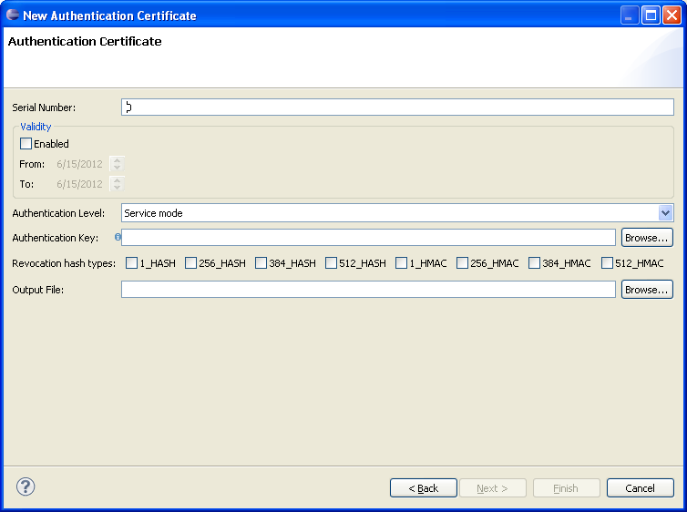

How to create an authentication certificate for the U5500/U8500/M7400/L9540 platforms
An authentication certificate is a binary file that can be used as input when creating
an authentication sign package.
Pre-requisites
Please make sure that you have access to a public or private RSA authentication key in PEM format.
Instructions
Open the Authentication Certificate Wizard by completing the following steps:
- In the Eclipse menu, select File -> New > Other... (or press Ctrl+N)
- Expand the Flash Kit category to make the Certificates category visible
- Expand the Certificates category to see the Authentication Certificate
- Select the Authentication Certificate and press Next
The following dialog will pop-up and the user must fill in correct values in order create the certificate

Required Fields:
- Serial Number: An integer used to uniquely identify the certificate.
- Authentication Level: An integer used to control which access rights that is provided after the authentication.
- Authentication Key: The RSA key used to verify a signed authentication challenge. Must be a PEM formatted RSA private or public key.
- Revocation hash types: To revoke hash algorithm, check the corresponding checkbox (1_HASH, 256_HASH, 384_HASH, 512_HASH, 1_HMAC, 256_HMAC, 384_HMAC, 512_HMAC) which hash type should be revoked.
- Output File: The path to where to write the certificate.
Optional Fields:
- Validity: Defines the life time of the certificate. If disabled, no time restrictions are used for the certificate.
- From: The date when the certificate is first valid. The time used is UTC.
- To: The date when the certificate becomes invalid. The time used is UTC.
If the wizard is not finished early, the last optional page includes U5500/U8500/M7400/L9540 Software Signing.
This is convenient if you want to create certificate and then sign it at once. For details see
How to create U5500/U8500/M7400/L9540 signed software